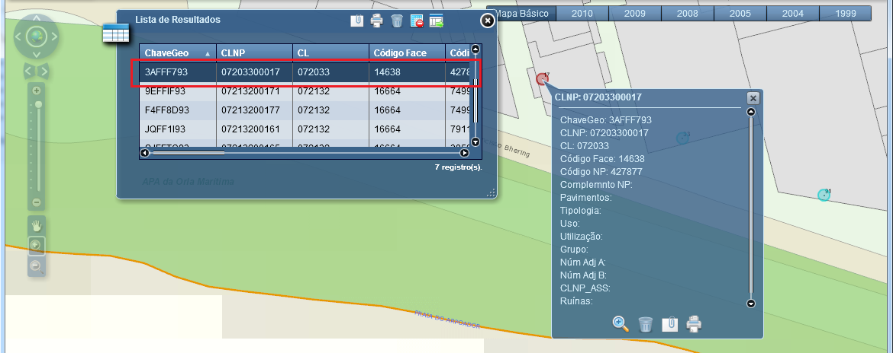
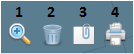

Exibir Pop-up
Exibe o pop-up contendo informações sobre a feição selecionada na Lista de Resultados.
Passos para exibir pop-up:
1 - Clicar sobre o registro que deseja visualizar na “Lista de Resultados”.

2 - O pop-up será apresentado sobre o Mapa, contendo as informações referentes à feição selecionada.
As seguintes funcionalidades também estarão disponíveis:

1 - Aplicar zoom: aplica zoom no item selecionado no Mapa;
2 - Remover: remove a seleção da Lista de Resultados e consequentemente, sua seleção no Mapa;
3 - Anexos: Permite adicionar anexos à feição selecionada. Mais detalhes, acesse a opção “Gerir Anexo” deste manual;
4 - Imprimir: permite a impressão da visualização do Mapa. Mais detalhes, acesse a opção “Configurar Impressão” deste manual.